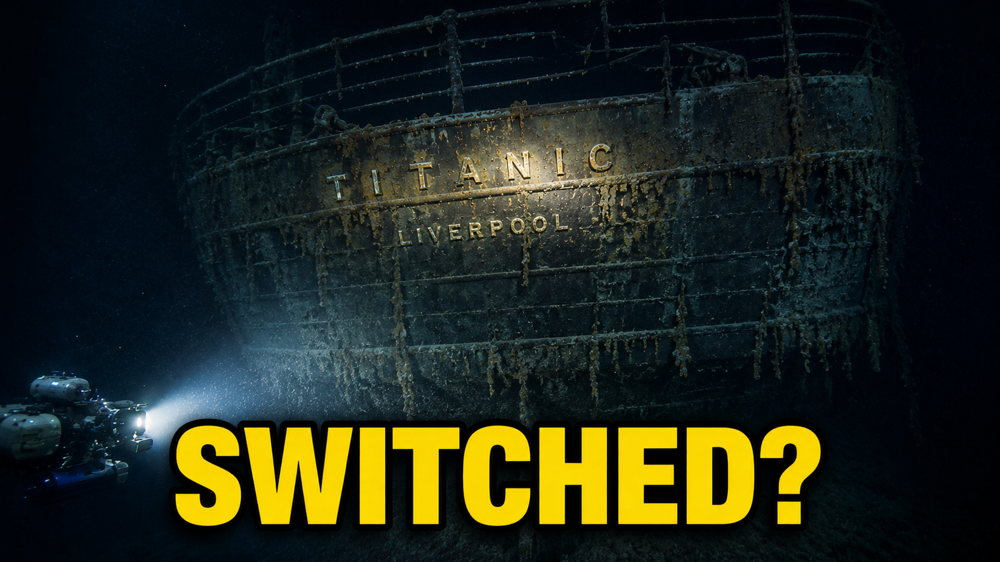

Was Titanic Really Switched With Another Ship?

Sources, licenses & image/video credits
Historical records, research references and production credits for the Bygone Facts investigation of the claim that Titanic and Olympic were switched.
Research and documentary sources
- United States Senate inquiry, 1912. Testimony of Joseph Bruce Ismay, Day 11, 30 April 1912, including evidence concerning Titanic’s construction cost and insurance. Transcript hosted by the Titanic Inquiry Project.
- United States Senate inquiry report, 1912. Report and findings, reproduced by the Titanic Inquiry Project.
- Construction and service records. Robert John Welch’s photographs of Titanic and Olympic at Harland & Wolff, the boat-deck plan and the Library of Congress Olympic photograph are linked individually in the archival credits below.
- Digital wreck-scan reporting. Camille Bromley, National Geographic reporting on Titanic’s digital twin, 8 April 2025, including commentary from Titanic researcher Parks Stephenson. The episode cites this reporting as a research reference.
- The published switch theory. Robin Gardiner and Dan van der Vat, The Riddle of the Titanic (1995). Publication details and the book-cover credit appear below.
Archival images and historical documents
- Titanic leaving Southampton, 10 April 1912. Photographer unknown. Wikimedia Commons source record: public domain.
- RMS Titanic wreck bow, June 2004. Credit: NOAA / Institute for Exploration / University of Rhode Island (NOAA/IFE/URI). Wikimedia Commons source record: public-domain U.S. federal government work.
- RMS Olympic, 1911. Photograph by Paul Thompson. Wikimedia Commons source record: public domain.
- White Star Offices, Liverpool. Historical publication image from The Architectural Review (1897); architects Richard Norman Shaw and James Francis Doyle. Digitized publication at the Internet Archive. Wikimedia Commons source record: public domain in the United States.
- RMS Titanic ready for launch, 1911, May 1911. Photograph by Robert John Welch. Wikimedia Commons source record: public domain.
- Olympic and Titanic at Harland & Wolff, 6 March 1912. Photograph by Robert John Welch. Wikimedia Commons source record: public domain.
- Titanic Boat Deck plan with lifeboats. Original drawing by an anonymous Harland & Wolff draughtsman; the source scan includes added lifeboat positions. Source record: Public Domain Mark 1.0.
- HMS Hawke and RMS Olympic following their collision. Photographs published in Popular Mechanics, December 1911; photographer unknown. Wikimedia Commons source record: public domain in the United States.
- Olympic in later service, c. 1915–c. 1920. Bain News Service; George Grantham Bain Collection, Library of Congress. Rights advisory: “No known restrictions on publication.”


Historical materials appear as reference images, cropped details, animated stills or colorized treatments. Bygone Facts added motion, highlights and explanatory graphics where appropriate. Colorization and AI-assisted reconstruction are identified on screen where relevant.
Map attribution
Isle of Wight in England by TUBS, via Wikimedia Commons, 28 November 2011. The source incorporates map elements by Spischot and Nilfanion.


License: Creative Commons Attribution–ShareAlike 3.0 Unported (CC BY-SA 3.0).
Changes by Bygone Facts: conversion from SVG, added labels and a location marker, cropping and animation. The adapted map segment is available under CC BY-SA 3.0.
Expedition footage and licensed stock
Titanic wreck expedition footage
R.M.S. Titanic: June 2004, NOAA Ocean Exploration. Credit: RMS Titanic Team Expedition 2004, ROI, IFE, NOAA Ocean Exploration. The production rights record identifies this material as U.S. Government source footage, used as documentary wreck-site imagery. NOAA is not affiliated with and does not endorse Bygone Facts.
Pexels images and video
- Pen with feather on envelopes — Ylanite Koppens. Period-writing and insurance imagery.
- Judicial gavel on courtroom desk — Boko Shots. Legal and inquiry imagery.
- Aerial footage of the sea — Kmeel.com Videos. Calm-ocean imagery.
These three stock assets are used under the Pexels License.
Book cover and editorial references
Gardiner, Robin, and Dan van der Vat. The Riddle of the Titanic. London: Weidenfeld & Nicolson, 1995.
The book cover appears briefly for identification and commentary on the published switch theory. The cover remains copyrighted by its respective rights holder; it is not a freely licensed image.
The National Geographic / Parks Stephenson source card identifies research reporting. That citation does not assert ownership of the underlying scan imagery or endorsement by National Geographic.
Music and sound credits
Music
- “Gloomy Background for Documentaries – Dark Ambient” — Megalix.
- “Deep Bass Cinematic Tension Forensic Noir Investigative Pulse” — Ovrsoull.
- “Tension Documentary” — AtlasAudio.
- “Documentary Ambient” — BoDleasons.
Music sourced from Pixabay under the Pixabay Content License.
Sound effects and sonic identity
- “Sci-fi Ambient Drone.wav” — LookIMadeAThing.
- “Typewriter.aif” — TOC1.
- “traditional stamp.wav” — I.fekry.
These sound sources are from Freesound and are listed under CC0 1.0.
Original Bygone Facts production
Original documentary script, dossier opening and closing cards, timelines, comparison diagrams, yard-number and insurance graphics, evidence labels, manual compositing and animation by Bygone Facts. Narration is AI-assisted.
Illustrative treatments include colorized historical photographs and an AI-assisted reconstruction of Titanic resting on the seabed. These are illustrative reconstructions, not newly discovered archival photographs. On-screen labels distinguish treatments from original records where relevant.
Attribution notes
Rights descriptions reflect the cited source records and production documentation. Credits identify provenance and do not imply sponsorship, approval or endorsement by the archives, publishers, platforms or individual contributors.
For a source or credit correction, please contact Bygone Facts through our YouTube channel, identifying the episode and relevant timestamp.